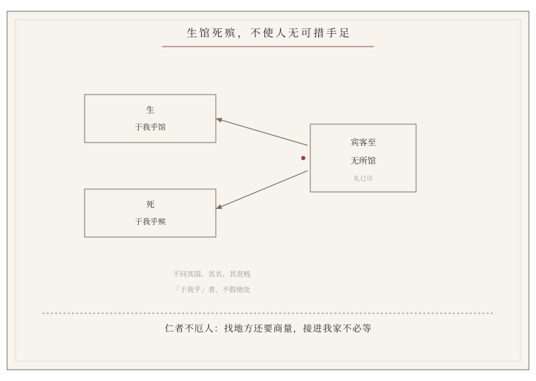

檀弓上 · 三·九十五 · 第 298 课
宾客至，无所馆。夫子曰：「生于我乎馆，死于我乎殡。」
说什么事：有宾客远来，没有地方住。夫子说：活着，就住在我这里；死了，就在我这里停殡。
落在哪一层：待客之终始。论「仁者不厄人」。
为何编在此位：上一课论「哀有不能至」，是礼许人不必勉强；此课反过来，把余地给足——人有到不了的地方，礼不逼；人有求救的处境，礼不推。
【经】賓客至，無所館。夫子曰：「生於我乎館，死於我乎殯。」
【注】仁者不厄人。
【疏】（底本此节无疏文。此条与上「子夏问」一节连排，郑注止此四字。）
宾客 自他国或他乡来者。客，非亲非故之通称。
无所馆 没有可住之处。馆，舍也，客舍、馆舍。
生 活着的时候。此指其留居之日。
于我乎馆 即「馆于我」。馆，用作动词，居之、舍之。
死于我乎殡 即「殡于我」。殡，停柩待葬。
厄 注「不厄人」。厄，困、迫、使之为难。
有宾客来了，无处安顿。夫子说：「活着，就住在我这里；若死在这里，就在我这里停殡。」
此节一句，注四个字：仁者不厄人。
「不厄人」三字，把整句的用意说尽。厄者，逼到墙角，使无可措手足。一个远客到此，无馆可居，这是最浅的一种厄；若他竟死在此地，无处停柩，那是更深的一种厄。
夫子一句话把两种厄同时解了：生则馆，死则殡。而且用的是「于我乎」——不是「我替你找地方」，是「就在我这里」。找地方还要与人商量，还要等；「于我乎」不给余地，也不给人等待的难堪。
此语的分量在于：他答应的是一个自己无法预知的结果。客会不会死在这里？几时死？他不知道。他答应的是一种无限期的承当：你今天住下，明天还住；你病了，我治；你死了，我殡。这是把「待客」从一次礼数，变成了一个终身的托底。
孔子说这话时并无计算。礼家记这话时也不加评断，只留注四字。四字里最高的评价，往往最短。
第一层 待客的礼与「不厄」的仁 礼有「迎客」「授馆」之节，皆是常仪。此节所记，是常仪失效之时——没有馆可授。礼到此已尽，剩下的是仁：不按礼的分寸办事，直接把人接进自己的屋檐。
仁与礼在这里不是两层，是一个连续体。礼规定了「应当如何」，仁在礼不够用时补上「我来」。若只有礼，客只能站在门外；若只有仁而无礼，接进来之后没有次第，仍是乱。
第二层 「死」字的分量 「死于我乎殡」是这句话里最重的一半。生馆是容易的，殡是难的：殡要择地、要治具、要担干系，还要面对一具不属于自家的柩。夫子把最难的那一半先说出来，等于先把账算给你听——我不是许你住两夜，我是许你到底。
第三层 为什么不问「客是谁」 经文只作「宾客至」，不记其国、其名、其贵贱。这是记礼者的省略，也是一种态度：不厄人这件事，不问来者是谁。若先问贵贱，则此语就成了待贤之礼，而不是仁。
第四层 此节无疏的意义 无疏，注四字。注已经说完，疏无可申。凡此类极短之章，其义常在文字的密度里，不在疏的推衍里。读者当于此体会《檀弓》记言的简法：一句话，四个字注，不添一辞。
与今日何干 今人有客远来，多先问「住哪儿」；答「住我这儿」，已是厚意。然此节所许者更进一层：住到我这里，若出事也在我这里。前者是方便，后者是担负。分别只在「出事之后」四个字。
| 左 | 右 |
|---|---|
| 宾客至 | 来者 |
| 无所馆 | 礼已尽 |
| 生 | 一半 |
| 死于我乎殡 | 另一半 |
| 于我乎 | 不假他处 |
| 不厄人 | 注之四字 |
| 不记其名 | 不问贵贱 |
| 无限期 | 不设期限 |
画一处士人居所的门内庭院，视点自庭中略低平视。庭院左侧是门，门外站着三位远来的行者（背向观者、背负行囊、其中一人拄杖）。门内阶上一位深衣长者（正面、右手抬起作引客入内之状）。庭院右侧，一间偏舍的门敞开着，舍内可见一张空席与一盏灯。不写文字、不画人面细节。赭色只用在偏舍那盏灯的灯焰，与门外行者行囊的系带。
